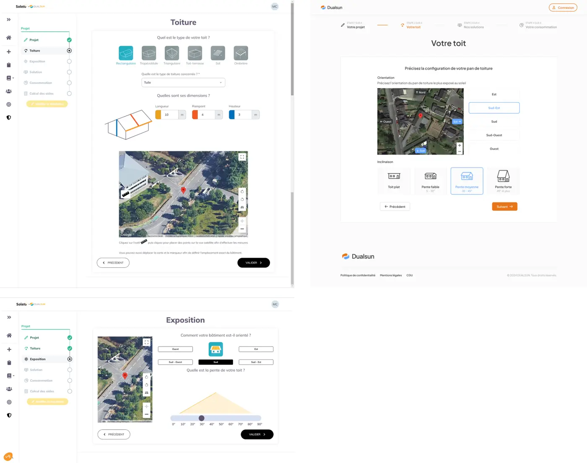
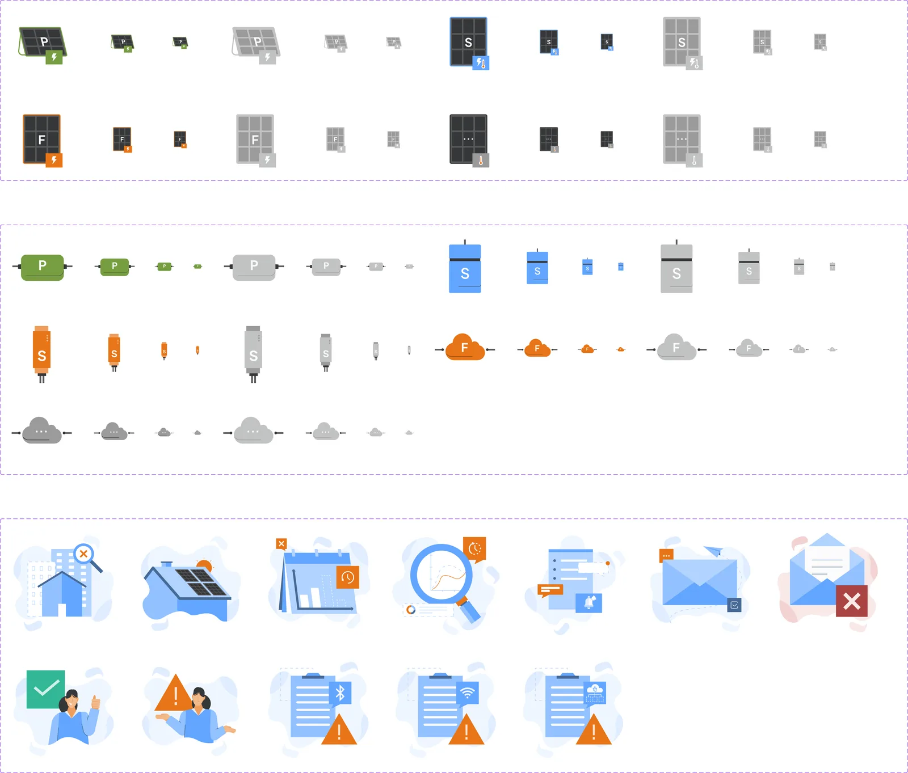
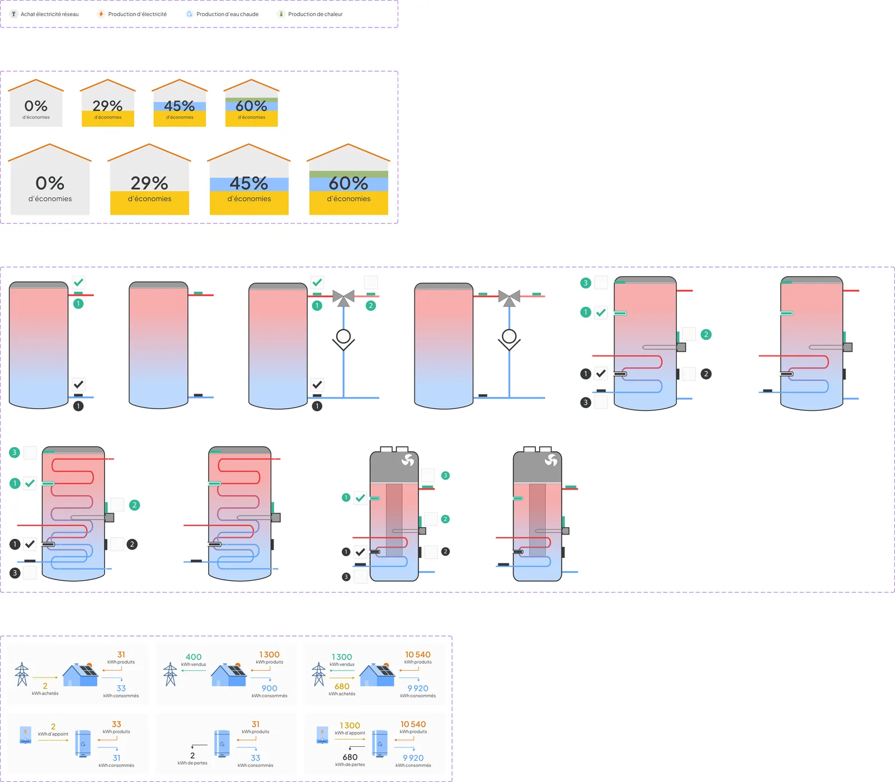
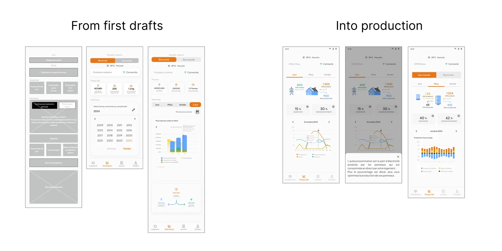
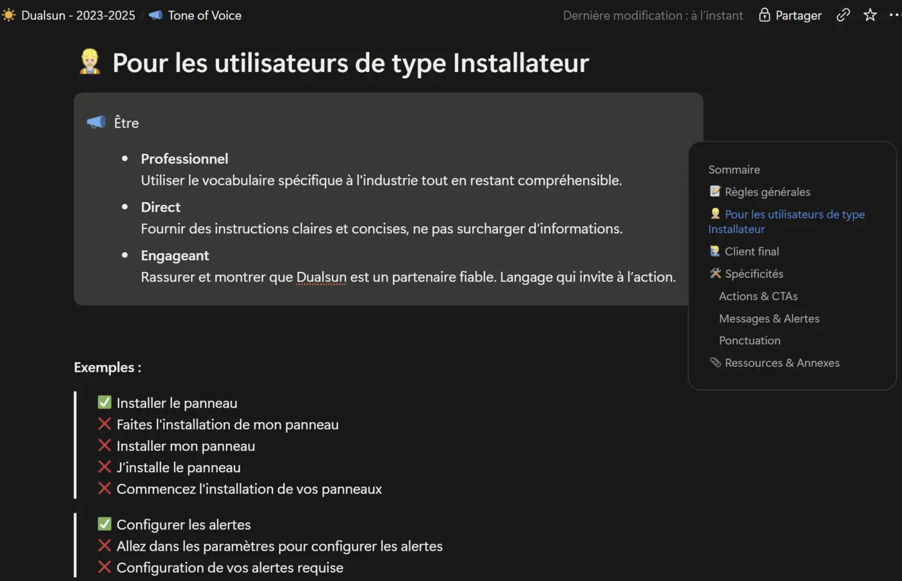
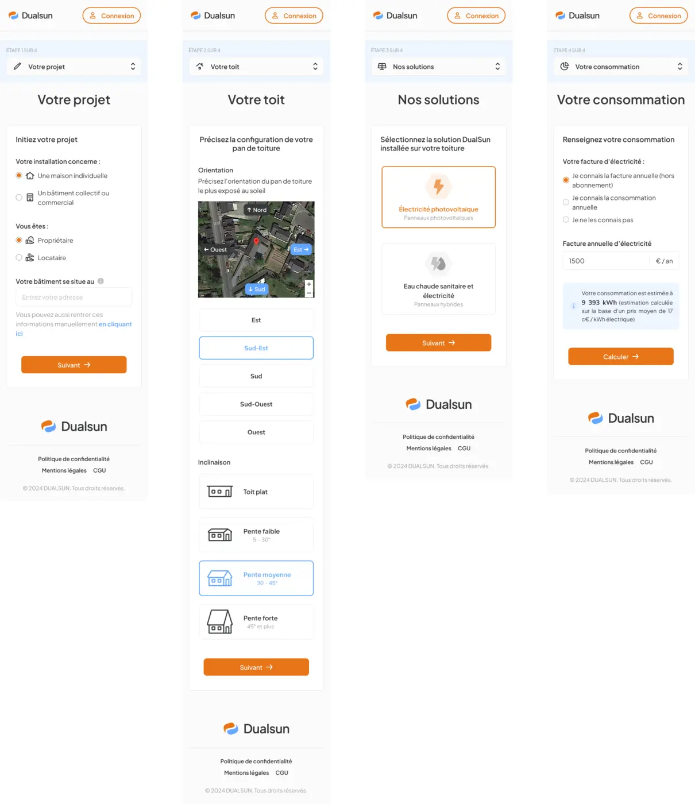
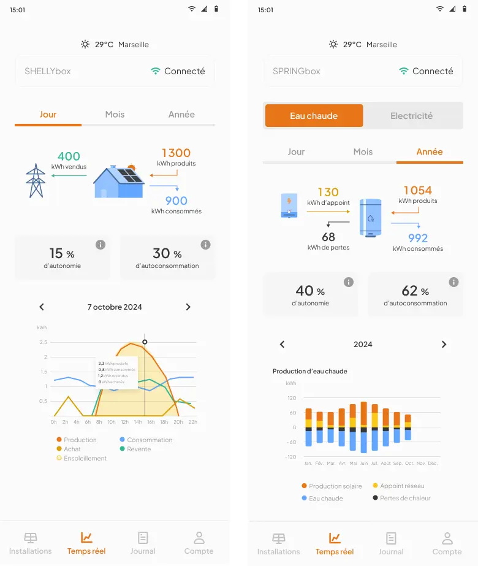

2023-2025 • ~2 ans
Débloquer une équipe solaire B2B par la recherche et un design system évolutif
Plateformes solaires SaaS & IoT B2B

Le défi
Dualsun traversait une période d'hypercroissance (chiffre d'affaires passé d'environ 30 M€ à 70 M€ en 2023), avec une forte pression sur la vitesse de livraison. Seule designer sur des plateformes solaires SaaS & IoT B2B, je devais transformer des parcours complexes et peu intuitifs en expériences claires — tout en étant sollicitée en continu par les PM, les développeurs et le marketing. Une étape toiture + exposition confuse faisait décrocher des utilisateurs en plein simulateur, et un design system incohérent, non conforme WCAG, ralentissait chaque livraison sur les trois plateformes du produit (web, app installateur, dashboard IoT).
Ma mission : refondre les parcours clés, sortir le design de son rôle de goulot d'étranglement, et donner plus d'autonomie à l'équipe — avec trois plateformes à couvrir, le levier le plus efficace n'était pas d'ajouter des heures mais de démultiplier la capacité de toute l'équipe produit.
L'impact en chiffres
- +14%Clics sur « Je m'inscris » en fin de simulation, validé par tests A/B (MAB), estimation a minima
- −50%Temps de recherche, après avoir formé les PM aux entretiens UX
- +20%Découverte précoce des PM, grâce aux templates réutilisables
Méthodologie
Repenser le problème
Un problème de confiance, pas juste un bug UX
Le signal : un taux d'abandon constant aux étapes toiture et exposition du simulateur, mesuré sur Hotjar pendant plus d'un an. Les installateurs nous le répétaient : ils préféraient faire cette partie eux-mêmes, sur site ou à partir de l'adresse avec Google Maps, car les prospects connaissent mal les paramètres de leur toit et de leur maison.
Ces deux sources m'ont fait conclure à un problème de clarté et de confiance plutôt qu'à un bug isolé. J'ai fusionné l'exposition dans l'étape toiture, avec le même repère satellite et une seule décision à prendre, pour ramener le parcours de 6 à 5 étapes : quatre étapes de simulation, puis l'inscription. J'ai aussi simplifié la configuration de l'app IoT pour que clients et installateurs réussissent seuls.
Le critère de succès : la conversion, c'est-à-dire les prospects qui vont au bout du parcours et cliquent sur « Je m'inscris » en fin de simulation (l'inscription est nécessaire pour voir les résultats), signe qu'ils ont assez confiance pour avancer seuls vers l'achat. Je suivais aussi le temps total et le temps par page, pour vérifier que la simplification rassurait. Résultat du test A/B (MAB) : au moins +14 % de clics sur « Je m'inscris », et un temps de parcours en baisse, que j'ai lu comme un signe de réassurance.

À gauche : l'ancien parcours en deux étapes (Toiture, puis Exposition). À droite : la nouvelle étape fusionnée « Votre toit » qui remplace les deux — +14 % de clics sur « Je m'inscris » en fin de simulation, validé par tests A/B (MAB). Désengorger la recherche
Sortir le design du goulot d'étranglement
“Testing with one user early in the project is better than testing with 50 near the end.”
— Steve KrugMieux vaut tester tôt et avec du monde que d'attendre la fin du projet pour ne s'appuyer que sur des métriques : c'est le principe qui a guidé ce chantier chez Dualsun — tester plus souvent, avec plus de monde, dès les premiers croquis et prototypes, en gardant les données et KPIs comme filet en fin de parcours.
Le vrai enjeu n'était pas seulement UX : le design était devenu un point de passage obligé pour toute l'équipe, et la meilleure réponse était de démultiplier notre capacité à concevoir et à tester.
J'ai monté un pool de bêta-testeurs (installateurs partenaires et clients B2C satisfaits) : un email Brevo envoyé à chaque nouveau client et à tous les installateurs partenaires leur propose de le rejoindre ; au clic, l'acceptation et sa date sont enregistrées dans Odoo, notre ERP, et la date du dernier entretien y est renseignée à la main. Les testeurs sont ainsi sollicités plus souvent, sans mails en rafale, sans recherche des meilleurs profils ni demande aux CSM de désigner qui contacter. J'ai aussi formé les PM aux entretiens UX pour mener les entretiens en parallèle plutôt qu'en file d'attente. J'ai créé des templates low-fi prêts à l'emploi pour que chacun puisse illustrer ses idées sans attendre un créneau avec moi.
Et j'ai formé — quelques heures suffisent — les PM, le Marketing, les ingénieurs produit et les devs sur Figma : les devs pouvaient explorer le design system, exporter le code des maquettes et inspecter les dimensions eux-mêmes ; les PM éditer un écran, créer un flux ou un prototype rapide sans moi ; le Marketing mettre à jour icônes, couleurs et illustrations pour le branding ; et les ingénieurs produit organiser leurs propres schémas, avec des couleurs directement issues du design system — plus rapide et plus cohérent qu'avec une licence Adobe partagée, ses incohérences de couleurs et ses plantages récurrents. L'objectif : faire monter toute l'équipe produit en compétence pour désengorger le design et redonner de l'autonomie à chacun.
Encadrer des freelances
Deux freelances intégrés au design system
Sur les écrans les plus chargés en UI, j'ai fait appel ponctuellement à un designer UX/UI et à un graphiste freelance.
Avec le graphiste, je cadrais le brief et je faisais des retours sur l'orientation des illustrations et des vidéos de tutoriel (par exemple pour le montage du boîtier IoT), avec des références d'écrans Figma pour garder la cohérence avec le design system.
Avec la designer UX/UI, le vrai travail a été de faire grandir sa capacité à argumenter ses choix : elle produisait beaucoup d'écrans mais justifiait peu ses partis pris. Je la challengeais systématiquement (« pourquoi ce pattern ? quelle est la convention ici, pourquoi s'en écarter ? quel est ton flow recommandé et pourquoi ? »), elle retravaillait ses écrans avec mes retours, et nos échanges suivants devenaient plus solides des deux côtés. J'ai ensuite intégré et adapté ces écrans dans le produit selon les mêmes schémas que le reste du design system — pour paralléliser les livraisons tout en gardant une cohérence visuelle et fonctionnelle sur l'ensemble des plateformes.
Un des tutoriels de branchement animés conçus par la graphiste freelance, sur la base de mon cadrage et de mes retours. 
Illustrations statiques (écrans vides, boîtiers IoT, panneaux) produites par la graphiste freelance à partir de mon brief. 
Mes propres illustrations techniques, reprenant et adaptant le style de la graphiste et d'anciens schémas produit. 
Du brouillon (v1) à la version 5 de la designer UX/UI freelance, jusqu'à ma version retouchée et intégrée en production. Un tone of voice pensé par profil utilisateur
Contenu et refonte visuelle, en parallèle
En parallèle du système visuel, j'ai rédigé les règles de tone of voice du produit avec des règles distinctes par audience : les installateurs professionnels ont besoin d'instructions directes, peu jargonneuses ; les particuliers ont besoin de réassurance et de langage simple. Chaque règle est accompagnée d'un exemple juste/faux, pour que toute l'équipe l'applique de façon cohérente.
Cette période a aussi coïncidé avec le rebranding de la charte graphique. Je suis intervenue en amont pour apporter mon expertise accessibilité — en argumentant certains choix de couleurs pour garantir les contrastes, et en étant vigilante sur la lisibilité de la typographie et du logo. Les changements ont ensuite été répliqués et tokenisés dans le design system, pour rester cohérents, se propager rapidement, et garder un export en code facile à maîtriser.

Règles de tone of voice rédigées pour le persona « Installateur », avec des exemples de formulation juste/faux pour que toute l'équipe les applique de façon cohérente. Piloter & autonomiser
Planifier la roadmap, livrer un parcours guidé et responsive
Je participais à la planification et à la stratégie produit avec le PM et les PO. Pour chaque produit (l'app mobile, l'intranet de gestion de projets solaires pour les installateurs), on examinait les fonctionnalités à développer, on les priorisait et on fixait les deadlines en comptant le design, le développement et la review. Les priorités : l'app mobile (onboarding et accompagnement au branchement, nouvel équipement IoT pour un nouveau type de panneau, simplification B2B et B2C pour réduire la friction de la configuration et de l'usage quotidien) et le simulateur MyDualsun, pour attirer plus de prospects, donc plus de chiffre d'affaires et des partenariats avec des installateurs satisfaits, à qui l'on apporte des clients.
C'est avec Laura White, PM, que j'ai appris à construire une roadmap et une stratégie de benchmark : elle m'a épaulée, m'a donné de la voix et du poids dans la construction de la roadmap, du planning et de la priorisation, et je l'ai en retour soutenue sur la création des tickets de développement.
Deux arbitrages de cette roadmap : la refonte de l'étape toiture n'était pas prioritaire au départ ; en analysant les données et les gains possibles, puis en les justifiant auprès du PM, nous l'avons repriorisée avec le PO. Et j'ai fait passer en priorité la création du pool de bêta-testeurs, pour tester plus souvent et plus efficacement (voir l'étape 02).
J'ai fait passer à l'échelle un design system WCAG (Tailwind, Material/Ionic) — avec la même clarté et la même logique sur mobile que sur le simulateur desktop, avec l'inscription demandée seulement en fin de simulation, pour accéder aux résultats.

Le parcours en quatre étapes pour les prospects (non connectés) — projet, toit, solutions, consommation — présenté ici sur mobile, de bout en bout.
Résultats
- Parcours simplifié de 6 à 5 étapes (4 de simulation, puis l'inscription) en fusionnant toiture et exposition, validé par test A/B (MAB) → +14 % de clics sur « Je m'inscris » en fin de simulation
- Design system WCAG déployé et unifié sur trois plateformes (Tailwind, Material/Ionic)
- Tone of voice rédigé par profil utilisateur (installateur professionnel vs particulier), avec des exemples de formulation juste/faux pour que toute l'équipe l'applique de façon cohérente
- Pool de bêta-testeurs et PM formés aux entretiens UX pour paralléliser la recherche, templates low-fi prêts à l'emploi, et Figma enseigné aux PM, au Marketing, aux ingénieurs produit et aux devs pour gagner en autonomie
- Planification produit avec le PM et les PO : priorisation et deadlines par produit, et refonte de l'étape toiture repriorisée sur la base d'une analyse des gains
- Deux designers freelance encadrés pour paralléliser les livraisons
- Coaching d'une designer UX/UI freelance vers plus d'argumentation produit (choix de patterns, conventions), au-delà de la simple exécution UI
